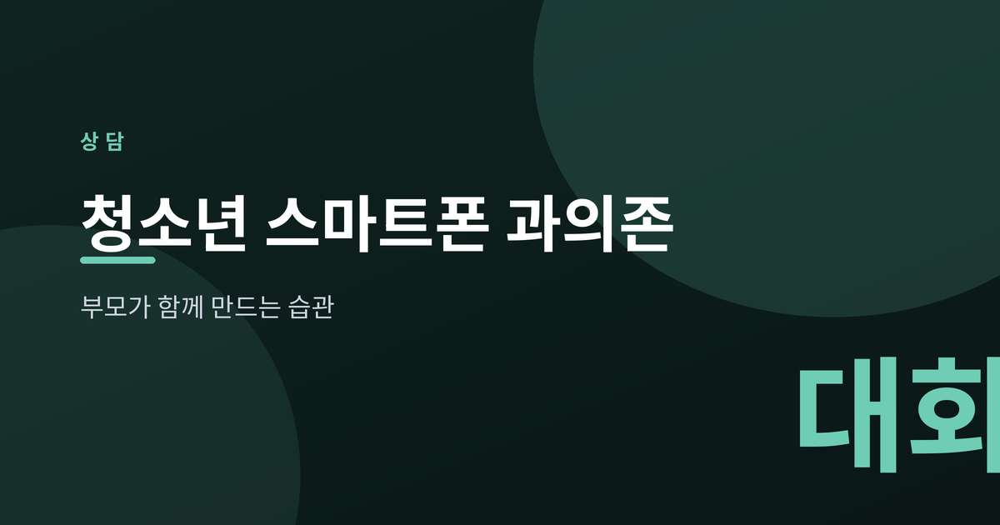
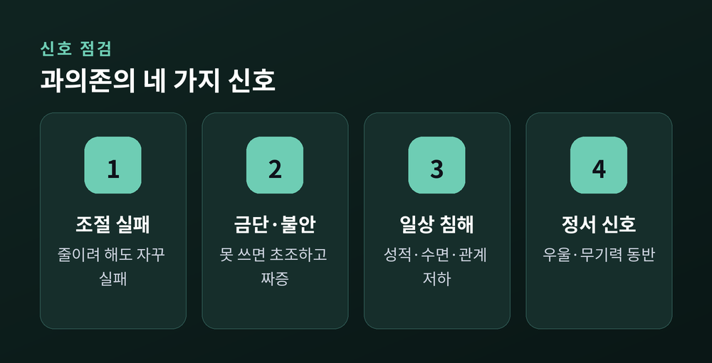
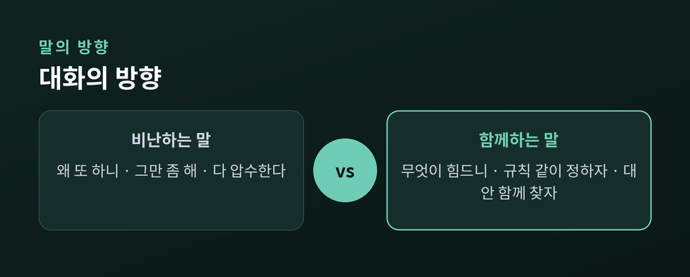
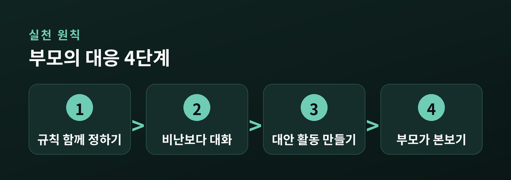

부모가 함께 만드는 건강한 사용 습관

이번 글에서는 청소년 스마트폰 과의존을 부모의 자리에서 어떻게 바라보고 도울지 정리해 보겠습니다. 겁을 주려는 글이 아닙니다. 신호를 알아차리고, 아이와 함께 습관을 다시 세우는 방법을 상담의 관점에서 담담히 나눕니다.
숫자부터 보겠습니다. 2024년 조사에서 청소년의 스마트폰 과의존 위험군 비율은 42.6%로 나타났습니다. 전 연령대가 대체로 안정되는 가운데 청소년만 오히려 늘었습니다.
일상에 지장을 받는 청소년은 약 22만 명으로 집계됐습니다.
수치는 참고일 뿐입니다. 중요한 건 우리 아이의 오늘입니다.

과의존은 '오래 쓰는 것'과 다릅니다. 핵심은 조절이 되느냐입니다.
줄이려 해도 자꾸 실패합니다. 손에서 놓으면 불안하고 짜증이 납니다. 성적과 수면, 친구 관계에까지 금이 가기 시작합니다.
여기에 우울이나 무기력이 겹친다면, 스마트폰은 원인이 아니라 마음의 신호일 수 있습니다.
과의존은 여러 곳에 흔적을 남깁니다.
밤늦은 사용은 수면을 얕게 만듭니다. 집중력이 흐트러지니 학업도 흔들립니다. 금단과 내성, 충동성 같은 정서 문제가 따라오기도 합니다.
청소년기의 뇌는 자기조절 기능이 아직 자라는 중입니다. 즉각적인 자극에 더 쉽게 끌리는 것도 그래서입니다. 의지가 약해서가 아닙니다.

예전엔 몰수와 잔소리가 답인 줄 알았습니다. 지금은 아이와 '함께'가 답에 더 가깝다고 봅니다.
첫째, 규칙을 함께 정합니다. 통보가 아니라 합의입니다.
둘째, 비난보다 대화입니다. "왜 또 하니"보다 "무엇이 힘든지" 묻습니다.
셋째, 대안을 만듭니다. 운동이든 취미든, 화면 밖의 즐거움을 함께 찾습니다.
넷째, 부모가 본보기가 됩니다. 식탁에서 부모의 손에도 스마트폰이 없어야 합니다.

가정의 노력만으로 벅찰 때가 있습니다. 조절이 전혀 되지 않고 수면·학업 같은 일상 기능이 무너진다면, 그때는 도움을 청할 때입니다.
청소년상담1388은 국번 없이 1388, 문자와 카카오톡으로도 24시간 무료로 이어집니다. 한국청소년상담복지개발원과 지역 청소년상담복지센터에서 개인·집단상담과 부모교육을 받을 수 있습니다.
도움을 구하는 일은 실패가 아니라 회복의 시작입니다.
정리하면 이렇습니다. 스마트폰을 빼앗는 싸움이 아니라, 아이와 나란히 습관을 다시 세우는 과정입니다.
"통제가 아니라 함께하는 것."
아이를 바꾸려 애쓰기 전에, 오늘 저녁 식탁에서 먼저 스마트폰을 내려놓아 보시면 어떨까요.